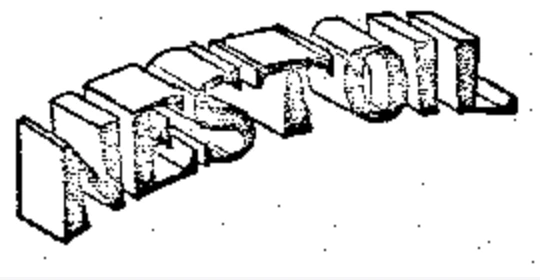
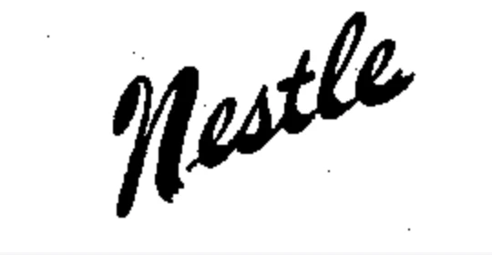
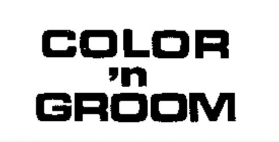
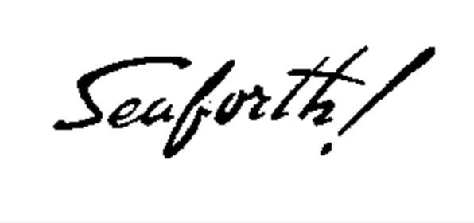

Trademark records offer an important view into the development of the Nestlé-LeMur Company and its product portfolio.
They show that the company was not built around isolated products only. Instead, the names suggest a gradual expansion from specialised hair treatment and permanent wave products into shampoos, styling products, cosmetics, fragrances and men’s grooming.
From Hair Technology to Cosmetic Brands
The strongest historical connection remains hair treatment. Products such as Nestoil, Colortint, ColorOut, Touch ’n Groom, Color ’n Groom and Midas Touch point to a structured hair-colour and hair-care system.
This is important because the portfolio included not only colouring products, but also correction and maintenance products. ColorOut, for example, was registered as a hair colouring remover. This suggests a broader technical approach to hair treatment rather than single-product marketing.
Styling and Grooming Products
Later trademarks show a move into everyday hair styling and grooming.
Names such as Natural Net, Magic Net, Upsweep and Wisp Stick reflect products designed for hair spray, hair dressing and detailed grooming around the hairline.
This marks a shift from professional salon treatment toward daily consumer use.
Shampoo and Care Products
The company also developed or held trademarks for care-oriented products, including Mother’s Darling, Sweet Nature, Lemur and Nescare.
These names indicate a softer and more regular-use product category. Mother’s Darling, registered for shampoo in 1955, is one of the most visually and historically interesting names in the Nestlé-LeMur portfolio.
Cosmetics and Personal Care
The trademark list also shows expansion beyond hair.
Products such as Air-Whipt for face powder, Discotheque for lipstick, Ballerina for cosmetics and Mavis for talcum powder show that Nestlé-LeMur became active in broader cosmetic and personal care categories.
This development places the company within the wider mid-20th-century beauty industry, not only within the technical history of the permanent wave.
Men’s Grooming and Toiletries
Several names were aimed at male consumers, including Reel Man, Club Royale, Seaforth and Desperado.
These trademarks show that Nestlé-LeMur also participated in the growing men’s grooming and toiletry market. Products included men’s colognes, after shave and related grooming preparations.
Fragrances and Lifestyle Brands
Perfume and fragrance trademarks form another important part of the later portfolio.
Names such as Fraternity, Sacrifice, Special Reserve, Vivacious, Duchess of Paris, Irresistible and Lov’ Me suggest a move into lifestyle-oriented branding.
This category is less directly connected to hair technology, but it shows how the company expanded into a broader cosmetic identity.
Historical Interpretation
The trademark structure suggests a clear development:
first, specialised hair treatment and permanent wave products;
then hair colouring, styling and maintenance systems;
then shampoos and care products;
and later cosmetics, fragrances and men’s grooming.
Seen together, the trademarks show Nestlé-LeMur as a company that moved from technical salon products into a wider beauty and personal care portfolio.
This makes the trademark record valuable not only for product history, but also for understanding the industrial development of the company.







Nestle Lemur Company, The Trademarks
ADORME
Filed: January 30, 1920
Perfumes [, Face Powders, Talcum Powders, Toilet Waters, Sachets, Sachet-Powders, Rouge, and Lip-Sticks]
Owned by: Nestle Lemur Company, The
Serial Number: 71127762
First used in commerce in 1919 and registered in 1921, ADORME represents one of the earliest cosmetic brand names associated with the Nestlé-LeMur Company, marking its entry into perfumes and beauty products.
The trademark remained active for several decades, with multiple renewals, before being cancelled in 2002, indicating a long-standing and foundational product line within the company’s portfolio.
NESTOIL
Filed: January 12, 1932
PREPARATION FOR TREATING HAIR AND FOR USE IN WAVING OR CURLING HAIR
Owned by: Nestle Lemur Company, The
Serial Number: 71322938
SPECIAL RESERVE
Filed: November 17, 1945
PERFUME
Owned by: Nestle Lemur Company, The
Serial Number: 71491759
REEL MAN
Filed: January 16, 1946
MEN'S COLOGNES
Owned by: Nestle Lemur Company, The
Serial Number: 71494847
SACRIFICE
Filed: January 23, 1947
PERFUME
Owned by: Nestle Lemur Company, The
Serial Number: 71516191
FRATERNITY
Filed: January 23, 1947
PERFUME
Owned by: Nestle Lemur Company, The
Serial Number: 71516193
NESTLE
Filed: February 12, 1948
TOILET PREPARATIONS, PREPARATIONS FOR USE IN THE TREATMENT OF THE HAIR, AND COSMETICS-NAMELY, LOTIONS FOR BLEACHING HAIR…
Owned by: Nestle Lemur Company, The
Serial Number: 71549567
First used in commerce as early as 1930 and registered in 1949, NESTLE represents a central brand within the Nestlé-LeMur portfolio, covering a wide range of hair treatments, cosmetics and toiletry products.
With a renewal in 1969 and expiration in 1992, the trademark reflects a long-standing and foundational product line spanning both technical hair applications and broader cosmetic use.
MOTHER'S DARLING
Filed: May 17, 1955
SHAMPOO
Owned by: Nestle Lemur Company, The
Serial Number: 71687712
First used in commerce in 1955 and registered in 1956, MOTHER’S DARLING reflects Nestlé-LeMur’s expansion into consumer-oriented shampoo products during the mid-20th century.
With a renewal in 1976 and expiration in 1997, the trademark indicates a long-standing product line within the company’s shift toward everyday hair care.
COLORTINT
Filed: September 27, 1955
HAIR TINTS
Owned by: Nestle Lemur Company, The
Serial Number: 71695434
MAVIS
Filed: August 21, 1956
TALCUM POWDER
Owned by: Nestle Lemur Company, The
Serial Number: 72014354
The MAVIS talcum powder appears in connection with the VIVAUDOU branding, indicating that it formed part of a broader cosmetic product line rather than a standalone trademark identity.
COLOROUT
Filed: July 12, 1963
HAIR COLORING REMOVER
Owned by: Nestle Lemur Company, The
Serial Number: 72172932
VIVACIOUS
Filed: September 17, 1963
PERFUME
Owned by: Nestle Lemur Company, The
Serial Number: 72177184
Registered in 1964 on the basis of commercial use, VIVACIOUS reflects Nestlé-LeMur’s expansion into fragrance-oriented branding during the 1960s.
The trademark expired in 1984, indicating a discontinued product line despite its earlier market presence.
NATURAL NET
Filed: November 2, 1964
HAIR SPRAY
Owned by: Nestle Lemur Company, The
Serial Number: 72205325
Registered in 1965 on the basis of commercial use, NATURAL NET reflects Nestlé-LeMur’s expansion into modern hair styling products such as hair sprays during the 1960s.
The trademark expired in 1985, indicating that the product was part of a mid-century styling line that was later discontinued.
UPSWEEP
Filed: January 22, 1965
HAIR DRESSING
Owned by: Nestle Lemur Company, The
Serial Number: 72210460
AIR-WHIPT
Filed: February 8, 1965
FACE POWDER
Owned by: Nestle Lemur Company, The
Serial Number: 72211561
DISCOTHEQUE
Filed: April 2, 1965
LIPSTICKS
Owned by: Nestle Lemur Company, The
Serial Number: 72215640
NESCARE
Filed: October 21, 1968
HAIR CONDITIONER
Owned by: Nestle Lemur Company, The
Serial Number: 72310121
First used in commerce in 1968 and registered in 1969, NESCARE reflects Nestlé-LeMur’s expansion into conditioning and care-focused hair products during the late 1960s.
The trademark expired in 1992, indicating a mid- to long-term product line that formed part of the company’s broader shift toward everyday hair care solutions.
DESPERADO
Filed: March 27, 1969
AFTER SHAVE AND COLOGNE
Owned by: Nestle Lemur Company, The
Serial Number: 72323005
TOUCH 'N GROOM
Filed: September 26, 1969
HAIR COLORING PREPARATION
Owned by: Nestle Lemur Company, The
Serial Number: 72339034
COLOR 'N GROOM
Filed: September 26, 1969
HAIR COLORING PREPARATIONS
Owned by: Nestle Lemur Company, The
Serial Number: 72339035
SWEET NATURE
Filed: November 25, 1974
HAIR SHAMPOO
Owned by: Nestle Lemur Company, The
Serial Number: 73038104
IRRESISTIBLE
Filed: October 24, 1975
PERFUMES AND EYE LINER
Owned by: Nestle Lemur Company, The
Serial Number: 73066880
LEMUR
Filed: April 23, 1976
HAIR SHAMPOOS, HAIR CONDITIONERS, AND HAIR SPRAYS
Owned by: Nestle Lemur Company, The
Serial Number: 73084843
MIDAS TOUCH
Filed: September 15, 1976
HAIR COLORING AND TOUCH-UP PREPARATION
Owned by: Nestle Lemur Company, The
Serial Number: 73099945
MAGIC NET
Filed: August 29, 1977
HAIR DRESSING
Owned by: Nestle Lemur Company, The
Serial Number: 73139318
LOV' ME
Filed: September 12, 1977
COLOGNES, PERFUMES AND DUSTING POWDER
Owned by: Nestle Lemur Company, The
Serial Number: 73140935
WISP STICK
Filed: September 19, 1977
HAIR-GROOMING PREPARATION USED ABOUT THE HAIRLINE
Owned by: Nestle Lemur Company, The
Serial Number: 73141669
DUCHESS OF PARIS
Filed: September 19, 1977
PERFUME
Owned by: Nestle Lemur Company, The
Serial Number: 73141671
SEAFORTH!
Filed: September 15, 1980
After Shave Lotion
Owned by: Nestle Lemur Company, The
Serial Number: 73277821
First used in commerce in 1939 and registered in 1983, SEAFORTH! represents a long-established men’s grooming brand later incorporated into the Nestlé-LeMur portfolio.
The trademark was cancelled in 1989, indicating a legacy product line that continued into the late 20th century but was ultimately discontinued under the company’s ownership.
COLOR GLO
Filed: February 10, 1983
a Hair Color Spray
Owned by: Nestle Lemur Company, The
Serial Number: 73413151
Image Trademark
Filed: December 10, 1984
HAIR COLOR SPRAY
Owned by: Nestle Lemur Company, The
Serial Number: 73513000
LADY DI
Filed: January 22, 1985
EAU DE TOILETTE AND SHAMPOO
Owned by: Nestle Lemur Company, The
Serial Number: 73518669
TOUCH OF GLITTER
Filed: July 22, 1985
HAIR SPRAY
Owned by: Nestle Lemur Company, The
Serial Number: 73549448
CLUB ROYAL
Filed: 24 Jan 1983
AN AFTER SHAVE COLOGNE
Owned by: Nestle Lemur Company, The
Serial Number: 73413144
The abandonment of the application reflects a late-stage product initiative that did not transition into a fully established or protected brand within the Nestlé-LeMur portfolio.
STREAKS 'N TIPS
Filed: July 22, 1985
HAIR SPRAY
Owned by: Nestle Lemur Company, The
Serial Number: 73549448
Registered in 1955 on the basis of commercial use, STREAKS ’N TIPS reflects an early approach to hair styling and colour detailing within the Nestlé-LeMur portfolio.
With a renewal in 1975 and expiration in 1996, the trademark points to a long-standing brand that evolved over time within changing styling trends.
PRECIOUS MOMENTS
Filed: 10 Sep 1940
HAIR SPRAY
Owned by: Nestle Lemur Company, The
Serial Number: 71431254
Registered in 1940, PRECIOUS MOMENTS reflects Nestlé-LeMur’s early expansion into lifestyle-oriented cosmetic and fragrance branding beyond technical hair applications.
The trademark remained active for several decades before being cancelled in 1995, indicating a long-standing but ultimately discontinued product line within the company’s portfolio.
PRECIOUS MOMENTS
Filed: 04 Sep 1951
Lotion Hand and Skin, Talcum, Body Powder
Owned by: Nestle Lemur Company, The
Serial Number: 71598748
Registered in 1951, VIVAUDOU appears to have functioned as a broader cosmetic brand within the Nestlé-LeMur portfolio, covering products such as lotions, powders and personal care items.
Evidence from product packaging, including MAVIS talcum powder, suggests that VIVAUDOU operated as a product line under which individual cosmetic products were marketed.